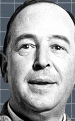

C.S. Lewis
My First Webpage using HTML
This website is a complilation of quotes that speak to me along with other fun additions.
This website is a complilation of quotes that speak to me along with other fun additions.

In this project I created a piece inspired by Early Internet Art that dives into how we find joy in life.
In this third project, I built a responsive, educational website that reminded future me how to build a responsive website.
This is a fun Duke Basketball Trivia page to see if you are a true CAMERON CRAZIE.
In this fifth project, I built a personal website Tells the Story of my Mission in Honduras through Images.
In this project I tried to reimagine ESPN as more of a social media type platform that also takes into account other sports media websites and is more user based.